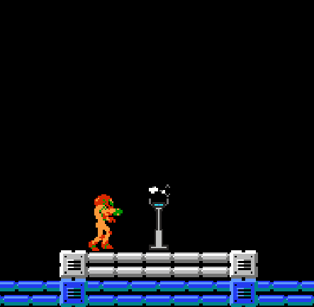

 Metroidal Tech Used: C#, Unity, LibreSprite Play: Itch.io Movement: [Arrow Keys] Jump: [Z] Shoot: [X] Swap weapons: [Spacebar] Morph: [Down Arrow] Custom Level: [4] Worked on:Custom mechanic/level/sprites, player character, audio, camera/doors, aesthetic authenticity